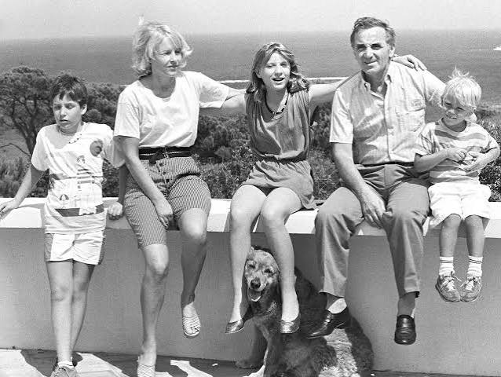

Charles Aznavour
Charles Aznavour était un célèbre chanteur, auteur-compositeur et acteur français. Il est né le 22 mai 1924 à Paris, d'origine arménienne. Il est devenu célèbre dans le monde entier grâce à ses magnifiques chansons, comme La Bohème et Emmenez-moi. Il est décédé le 1er octobre 2018, à l'âge de 94 ans. Aujourd'hui, il est considéré comme une légende de la chanson française.
Galerie


Un artiste inoubliable
Charles Aznavour était un grand chanteur, auteur-compositeur et acteur français. De son vrai nom Shahnour Vaghinak Aznavourian (parfois orthographié Shahnourh Varinag Aznavourian ou Chahnourh Varinag Aznavourian selon les sources).
Il est né à Paris le 22 mai 1924 de parents d'origine arménienne, Mischa (Mamigon) Aznavourian et Knar Baghdassarian, et est mort le 1er octobre 2018 à Mouriès. Il a choisi « Aznavour » comme nom de scène dès son enfance.
Biographie
Charles Aznavour (1924-2018) est l'un des plus grands auteurs-compositeurs-interprètes et acteurs français d'origine arménienne, surnommé le « Frank Sinatra français », avec une carrière exceptionnelle de plus de 70 ans et plus de 180 millions de disques vendus dans le monde.
Les débuts difficiles et la rencontre avec Édith Piaf (1924-1955)
Né Shahnourh Varinag Aznavourian à Paris de parents immigrés arméniens, Charles baigne très tôt dans le milieu artistique. Il monte sur scène dès l'âge de neuf ans.
- Roche et Aznavour :
La longévité et l'héritage (2000-2018)
Jusqu'à la fin de sa vie, Charles Aznavour refuse de prendre sa retraite, affirmant que la scène est sa raison de vivre.
- Tournées d'adieu à répétition : il continue de parcourir le monde à plus de 90 ans, chantant devant des salles combles à Tokyo, Moscou, Los Angeles ou Paris.
- Reconnaissance ultime : en 2017, il reçoit son étoile sur le célèbre Walk of Fame d'Hollywood.
- Disparition : il s'éteint le 1er octobre 2018 à l'âge de 94 ans dans sa maison de Mouriès, dans les Bouches-du-Rhône (à deux pas de Marseille), quelques jours après un dernier concert au Japon. Un hommage national solennel lui est rendu aux Invalides à Paris.
- Engagement : son engagement humanitaire et politique pour l'Arménie.
Ses albums et réussites
Au cours de ses 70 ans de carrière, Charles Aznavour a enregistré plus de 1 200 chansons et publié plusieurs dizaines d'albums studio, dont plusieurs grands classiques :
- Je m'voyais déjà (1961) : l'album de la consécration qui lance définitivement sa carrière en solo.
- La Mamma (1963) : un immense succès populaire qui installe sa renommée internationale.
- Aznavour 65 et La Bohème (1965-1966) : ses disques les plus célèbres, portés par des chefs-d'œuvre intemporels comme La Bohème et Hier encore.
- Entre deux rêves (1967) : l'album qui contient l'incontournable hymne Emmenez-moi.
- Colore ma vie (2007) et Toujours (2011) : preuves de sa longévité exceptionnelle, ces deux albums tardifs sont tous les deux certifiés disques d'or.
Ses plus grandes réussites
- Un succès planétaire : plus de 180 millions de disques vendus dans le monde et des chansons interprétées en neuf langues différentes (français, anglais, italien, espagnol, allemand, arménien, etc.).
- Les plus grandes scènes du monde : il a triomphé à l'Olympia de Paris, au Carnegie Hall de New York, au Royal Albert Hall de Londres et a continué les tournées mondiales jusqu'à l'âge de 94 ans.
- L'écriture pour les autres : il a écrit de grands succès pour d'autres légendes comme Édith Piaf, Juliette Gréco, Johnny Hallyday ou Sylvie Vartan.
Voir les paroles de « La Bohème » (1965)
Je vous parle d'un temps que les moins de vingt ans...
Trophées et médailles
-
Trophées artistiques : Victoire de la Musique (1997), Victoire d'honneur (2010),
César d'honneur (1997) et Grande Médaille de l'Académie française (1995).

-
Honneurs internationaux : étoile sur le Walk of Fame d'Hollywood (2017),
entrée au Songwriters Hall of Fame (1996) et Prix Raoul-Wallenberg (2017).

-
Décorations officielles : Commandeur de la Légion d'honneur en France (2003),
Héros national de l'Arménie (2004), Officier de l'Ordre du Canada (2008), et son engagement humanitaire et politique pour l'Arménie.

contact aznavour
 YouTube : @Charle Aznavour
YouTube : @Charle Aznavour
 Instagram : @Charle Aznavour
Instagram : @Charle Aznavour
 Facebook : @Charle Aznavour
Facebook : @Charle Aznavour